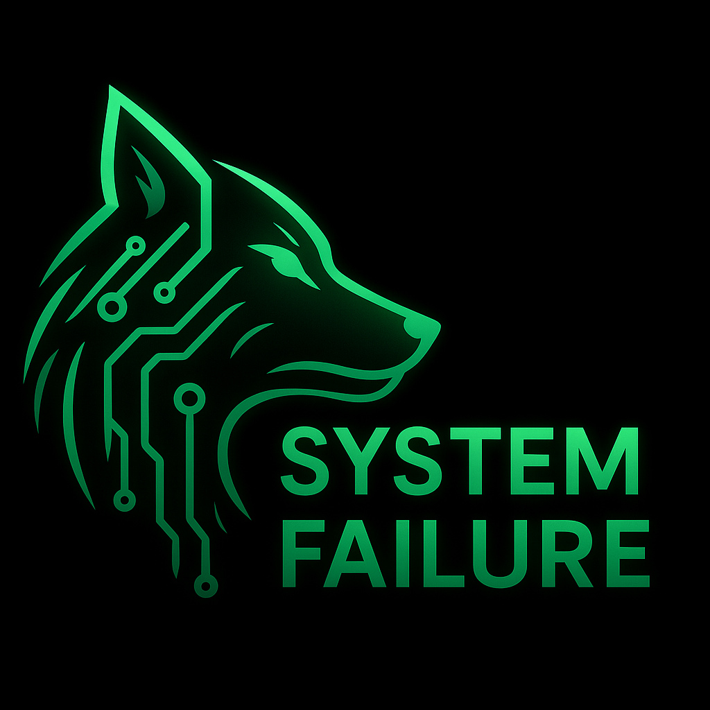

System Failure
Capture The Flag · Investigación Digital
Proyecto CTF orientado a entrenar habilidades reales de ciberinvestigación mediante retos y escenarios operativos.
Próximamente...
Nuestra misión: Impulsar una cultura de colaboración y excelencia que refuerce las capacidades de quienes trabajan en la primera línea de la seguridad y la inteligencia, ofreciendo soluciones aplicables en entornos reales y aportando valor tangible.
Nuestra visión: Consolidar Cypher Intelligence como referente por su contribución a una ciberinteligencia más eficiente, segura y orientada a decisiones, mediante metodologías y herramientas que prioricen el análisis, la repetibilidad y la compartimentación.
Trabajamos para ofrecer soluciones aplicables en entornos reales, aportando valor tangible a profesionales y organizaciones que operan en contextos críticos.
Proyecto CTF orientado a entrenar habilidades reales de ciberinvestigación mediante retos y escenarios operativos.
Próximamente...
¿Quieres aprender? ¿Quieres colaborar? Escríbenos a cypherintel@outlook.com.